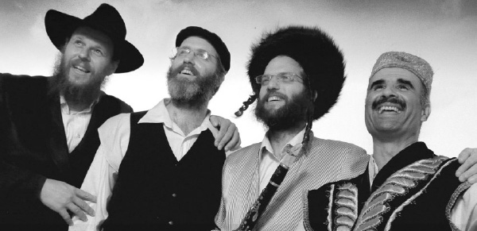

Opening Jewish Hearts and Minds Through Music
Naor Carmi found the answers to life through the pages of Likkutei Torah and today he uses his musical talents to spread the wellsprings and to bring authentic Chabad niggunim to the public, even to non-Jews. * His ensemble has performed dozens of Chabad niggunim and has produced a CD called “The Heart and the Wellspring.” * In a conversation with Beis Moshiach, Naor tells his story which began with a musical upbringing in Akko and now has him performing with the most interesting ensemble in the world of Israeli music.

In recent years, Naor Carmi has become synonymous with Chassidic music; not the popular brand of Chassidic music but a more authentic kind, Chassidishe niggunim that are presented to the public with professional arrangements. Even the not-yet religious Israeli public is excited by Chassidishe niggunim that were composed generations ago. Although it once would have been unheard of for a Chassidic young man to stand on the Israeli stage and perform Chabad niggunim, today it has become accepted.
Since “The Heart and the Wellspring” (HaLev V’HaMaayan) project began, conducted by Naor, Chassidishe niggunim have become a genre familiar to thousands of Jews from all segments of the population. Actually, it would be true to say that this is a new genre, that of the Chassidic niggun.
Naor’s story begins in Akko where he was born and grew up.
“There is a musical conservatory in Akko that was started by Shmuel Kahana so that children can study music instead of hanging out on the street. The choice then was to play music or be on the street and, fortunately for me, I was drawn to music.”
From the age of 12, Naor played wind instruments. One time, when he went with his mother to the conservatory, he saw a contrabass, the largest of the string instruments. Naor pointed at it and said, “I want to play that.” Today, you will see Naor with this large instrument at his many performances, but it took him a long time to get there.
“Since my childhood, I’ve played music. In the army I played in the military band; afterward, when I lived in Tel Aviv, I played in many musical groups.” Within a short time, Naor became a sought-after musician and he spent hours in performances with great Israeli artists.
FATEFUL MEETING WITH MEIR ARIEL
Along with the stardom and his dizzying success, a change came from an unexpected direction.
“I joined the ensemble of a very highly respected musician by the name of Meir Ariel a”h, who wasn’t religious but was a believing Jew. To him there was no glory or acclaim, but only music for music’s sake. He taught us what genuine simplicity is. At the time, we were performing for eight people. By the end of his life there were thousands flocking to his performances. He constantly spoke about Torah and other things were really marginal. All the musicians around him ended up becoming baalei t’shuva.”
How did working with a musician like that get someone to do t’shuva?
“We always knew there was something different about him. He did not wear a kippa but he always wore a hat, and he constantly spoke about his closeness to Judaism. He would pray every day and lived with Torah. When I attended his memorial, I went into his study and saw it full of Gemaras and chiddushim that he had written on the Torah. Apparently, he sat and learned Torah all day and that radiated to us, the musicians who worked with him.
“His influence on me as a musician was enormous. He believed in people as a result of his belief in G-d, and therefore he revealed enormous talents in them. My progress with him as a musician was tremendous. It wasn’t because he was a great musician, but because of his belief in G-d which caused him to believe in the goodness and ability within each person.
“I got my first push from him that made me understand that depth in life is not found among Indians or Aristotle but it all begins with us and nothing compares. It wasn’t a sudden major epiphany but a long process which continues till today.”
Meeting Meir Ariel and realizing that there is depth within Judaism inspired Naor to leave Tel Aviv and move to yishuv Tirat Shalom, a small yishuv near Nes Tziyona.
“I saw there was no point in continuing with the bohemian, Tel Aviv life. It suddenly all seemed frivolous to me. I realized there was something much more powerful and I had to get more involved in it. Tirat Shalom is a fabulous Yemenite village on a hill, which is surrounded by fields and wine presses. The residents are strong believers and I learned from them what simple faith in G-d is. The neighbors talked all day about G-d and I felt that He was actually present in their lives in a significant way.”
It sounds like one encounter with a believing Jew caused you to change your entire perspective.
“It didn’t happen all at once; it was a long, internal journey. I began getting acquainted with Judaism on my own, at home. I would learn Jewish books that I bought and began developing a positive approach to Judaism. The fact that I had begun relating differently to Judaism was already an achievement since I had been educated otherwise. I had to change my thought patterns and start thinking differently.”
OBSERVING SHABBOS IN AUSCHWITZ
“I wanted to connect to Judaism somehow, so I decided to keep Shabbos. I had a performance scheduled in Poland and as I walked the streets I thought, I am not in despair like the people I see around me. I began thinking about what differentiated me from them. Was I altogether different than them, and if so, how? I began to realize that I have something unique within me and that I had to know who I am and where I come from. I visited Auschwitz. When I was there, I decided to start keeping kosher.
“I spent most Shabbasos on my own, but occasionally I would go to shul on Shabbos and take in the Shabbos atmosphere. It was a very slow process that happened step by step. I kept moving further into the world of Torah and mitzvos.”
At this point, Naor met his wife-to-be. Before they married, he knew he had to learn about relationships within Judaism and he went to learn at Yeshivas Machon Meir in Yerushalayim. He related to the students there more than he thought he would and his wedding looked as yeshivish as that of any yeshiva bachur.
“Lots of bands and musicians came to the wedding, not all of whom were aware of the religious journey I had made. The rabbi suddenly said, ‘Naor’s yeshiva has arrived,’ and the hall filled up with bachurim from Machon Meir. My mother, who knew nothing about my t’shuva process, was completely surprised.”
Of course, his mother was not the only one who was surprised, but his friends too.
“At first, they were a little taken aback, but then they accepted it and were happy. The wedding was extremely joyous and they saw that there is truly another kind of joy from a pure place.”
After the wedding, Naor went back to Tirat Shalom and continued furthering his musical career while also continuing his spiritual journey, but something was still missing. Without any connection to his own process, his father also began a spiritual journey and became a baal t’shuva. His father met R’ Shlomo Frank, the director of the Rabbinic Council in Akko and a shliach of the Rebbe. It was through R’ Frank that Naor encountered the world of Chabad for the first time.
“R’ Frank was greatly mekarev me,” says Naor.
Together with R’ Frank, he learned Chassidus for the first time and discovered the depth it contains.
What attracted you to Chabad?
“In Chabad, I discovered a combination of several things that were very important to me, like Ahavas Yisroel. I saw genuine love for every Jew and I thought, everyone talks about Ahavas Yisroel but in Chabad they don’t just talk about it, they act on it. I saw that people were willing to forgo not only material things for another Jew, but even their spirituality. It impressed me tremendously. I saw that Ahavas Yisroel in Chabad is literally a way of life.
“Aside from that, I was drawn, of course, to the depth of Chassidus. When I learned Chabad Chassidus, I felt that nothing I had encountered until then was anything like it. I was captivated by the depth of Chassidus. As soon as I heard the maamarim in Likkutei Torah from R’ Frank, it was the deepest thing I had ever learned. It was a structured approach and not just a collection of nice aphorisms. The systematic learning had a great effect on me. I had learned in Litvishe yeshivos before that, and I was familiar with the depth of Gemara learning, but in Chassidus I found an altogether different kind of depth.”
Were you drawn to the intellectual aspect of Chassidus or the spiritual experience of the learning?
“I related to the intellectual experience. It says, ‘a person shouldn’t learn except in a place which his heart desires,’ because every person is drawn to a different place. I simply felt that this is what my heart desires. Like with music, where you can’t explain just what you find appealing in a tune, the same is true for Torah. I felt that I connected to this learning, mainly the teachings of the Alter Rebbe.
“There was also the experiential dimension. I was very moved by the whole experience of the farbrengen, where people sit together and say l’chaim and sing niggunim. That spoke to me. And of course the whole getting to know the Rebbe. Each time, I would be amazed by the Rebbe’s sichos and maamarim and all his activities.”
Naor moved to Yerushalayim where he met the Lubavitcher musician Daniel Zamir.
“Daniel supported me a lot. We were good friends and he was mekarev me to Chabad. Until today, I am grateful to him for the chizuk he gave me at that time.”
A FARBRENGEN THAT LIT UP THE WORLD OF NIGGUNIM
When did you become acquainted with Chabad niggunim?
“The niggunim were part of my exposure to Chabad; it’s just that I didn’t understand the depth at that time. It was another nice aspect, nothing more. I became familiar with niggunim at farbrengens, but I did not understand the treasure they contain.”
When did the change take place?
“There was a farbrengen for Lubavitcher musicians, which was attended by about fifty people. That’s when the switch in my head occurred, when I understood what Chabad niggunim, and Chassidic niggunim in general, are about. I no longer had any interest in playing anything else.”
Naor went to Beit Avi Chai, a cultural and social center located in Yerushalayim that holds Jewish cultural events and performances, and suggested a performance of Chassidic niggunim.
“I saw the time was right for performances like that, but I didn’t know what I was getting into. I didn’t have a plan; it was all up in the air.”
But the administration of Beit Avi Chai instantly liked the idea. Even before the first performance they arranged for four performances. That is how a new ensemble in Jewish music, called “The Heart and the Wellspring,” came to be. The ensemble was comprised of Naor along with the Chassidic-Yerushalmi Klezmer musician Chilik Frank, violinist Oren Tzur, and the accordionist virtuoso Ariel Alaev. The ensemble, which was formed for one series of performances, turned into a hit ensemble which is known, by now, as a brand name.
The early days weren’t easy. When Chilik Frank answered the call from Naor with the offer that he play at Beit Avi Chai, he wasn’t enthused. He had never performed in venues like that and was more accustomed to playing in Miron on Lag B’Omer or at Chassidic weddings. But Naor persisted and Chilik finally agreed to come. Today, his performances at Beit Avi Chai are well-known to many.
The biggest surprise came a few days after the advertising for the event, when all the tickets were bought in advance. People were really excited by the idea of a performance of Chassidic niggunim and not one seat remained for the public.
“We ourselves don’t understand how it happened,” says Naor. “We weren’t a known ensemble or famous artists. Each of us was known as an individual artist but not on this level.”
So what sold the idea to the public?
“We brought something new, performances of authentic Chassidic niggunim, which previously had never existed. We also brought our own touch to the event and professional musicians, and we combined this with a lot of stories and Divrei Torah. It was like a big farbrengen. People said they left different than they came. They felt this was something genuine. It was a Jewish festival; artists who didn’t play at all bad, and with Divrei Torah and stories.
“Some people said that as soon as they walked in it was hard to relate to the real world. They felt that this was so pure that it was difficult to go out to the big world which is full of lies. The music lifts people up to another level; when a niggun is played authentically, it has a certain power.”
AT THE MUSIC FESTIVAL IN AMSTERDAM
After the first performance, came many others. Then the invitation to the Jewish music festival in Amsterdam came. The people producing the festival are non-Jews who are interested in Jewish music. One hundred bands that play Jewish music were registered for the festival, out of which only twenty-four bands were accepted. Naor said they weren’t sure how their music would be received but after their first performance, in the quarter finals, the judges couldn’t restrain themselves and they got up and applauded.
A more interesting story took place in the run up to the semi-finals which took place on Friday afternoon and continued into Shabbos. They were the only ensemble comprised of religious Jews who could not participate in the finals on Shabbos. They were there at the beginning but left the hall before Shabbos so they could get back to their hotel to prepare for Shabbos. They did not know whether they would move up into the finals or not. Although the judges’ decision is usually announced at the end of the semi-finals, which took place Friday night, the director of the event personally called right before Shabbos to let them know that the judges said that they were accepted into the semi-finals even though they had left early.
“People had simply never heard this music before,” explains Naor. “It was inaccessible for generations, confined within the Chassidic world, and nobody knew these niggunim. There are about forty thousand Chassidic niggunim, most of which are not known. Chabad alone has nearly a thousand niggunim. Modzitz, for example, has four thousand niggunim. In Modzitz, the second Rebbe picked his successor from among his sons based on who was able to be more exact in the tune of the t’filla of Yom Kippur. But this great treasure was inaccessible for years and the world did not know Chassidic niggunim. Now people heard this music and felt it was something different.”
Naor says that today there is a great interest in Jewish music. There is even a non-Jewish band from Holland called DeGoyim that plays Jewish music.
WE HAVE A MISSION TO SPREAD THE LIGHT
What is unique about Chabad niggunim within the world of Chassidic niggunim?
“Playing a niggun is like learning Torah. You never fully plumb its full depth. You are always innovating. It’s like the daily davening where you say the same brachos and the same words every day, and each time you relive it. You always find something new in a niggun, even though you played it again and again. As far as I’m concerned, if the audience would be willing, I’d play one niggun for an entire performance. It’s enough for me, but since people are not open to the idea, I don’t do it.
“It’s the best music I know and I don’t know exactly why. It’s hard to put into words what a Chabad niggun is, but it’s different. I can’t say why and it’s hard for me to compare it to anything similar. You sense that these niggunim are coming from a very good place.”
How do you see your shlichus in music?
“With music, I don’t need to speak because it opens the heart of every Jew. Whatever I say afterward will be accepted because the heart was already opened.”
Naor adds, “Today there also needs to be a ‘sharing of the burden’ in Chabad. Every person has what to contribute with his approach to spreading the wellsprings. There is no need to rely solely on the shluchim because we are all shluchim. Nobody can say, ‘He does mivtzaim,’ because all of us ought to do mivtzaim. People are interested and each of us has to use what he’s got to give for the Rebbe’s mivtzaim.
“We are on the threshold of Geula and we see all the prophecies coming true, but there is still plenty of darkness in the world, many new voices among us that are against Judaism. I think that Chabad’s way is to increase the light, because you don’t chase darkness away with a stick but with light. People need to get involved in spreading the light.”
Do you feel that the nation is ready for Geula?
“Definitely. People are coming and buying tickets for a performance of niggunim and Divrei Torah! People are paying to hear the word of Hashem; is there a greater Geula than that?”
Sholom Ber Crombie. "Opening Jewish Hearts and Minds Through Music." Beis Moshiach, no. 890 (August 1, 2013).